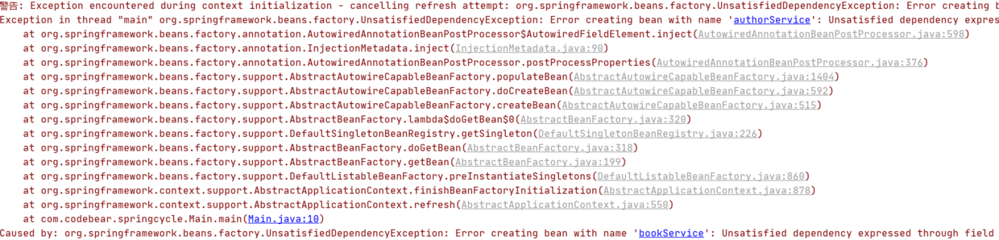

Spring 帮助你更好的理解 Spring 循环依赖¶
网上关于 Spring 循环依赖的博客太多了，有很多都分析的很深入，写的很用心，甚至还画了时序图、流程图帮助读者理解，我看了后，感觉自己是懂了，但是闭上眼睛，总觉得还没有完全理解，总觉得还有一两个坎过不去，对我这种有点笨的人来说，真的好难。当时，我就在想，如果哪一天，我理解了 Spring 循环依赖，一定要用自己的方式写篇博客，帮助大家更好的理解，等我理解后，一直在构思，到底怎么应该写，才能更通俗易懂，就在前几天，我想通了，这么写应该更通俗易懂。在写本篇博客之前，我翻阅了好多关于 Spring 循环依赖的博客，网上应该还没有像我这样讲解的，现在就让我们开始把。
什么是循环依赖¶
一言以蔽之：两者相互依赖。
在开发中，可能经常出现这种情况，只是我们平时并没有注意到原来我们写的两个类、甚至多个类相互依赖了，为什么注意不到呢？当然是因为没有报错，而且一点问题都木有，如果报错了，或者产生了问题，我们还会注意不到吗？这一切都是 Spring 的功劳，它在后面默默的为我们解决了循环依赖的问题。
如下所示：
@Configuration
@ComponentScan
public class AppConfig {
}
@Service
public class AuthorService {
@Autowired
BookService bookService;
}
@Service
public class BookService {
@Autowired
AuthorService authorService;
}
public class Main {
public static void main(String[] args) {
ApplicationContext annotationConfigApplicationContext = new AnnotationConfigApplicationContext(AppConfig.class);
BookService bookService = (BookService) annotationConfigApplicationContext.getBean("bookService");
System.out.println(bookService.authorService);
AuthorService authorService = (AuthorService) annotationConfigApplicationContext.getBean("authorService");
System.out.println(authorService.bookService);
}
}
运行结果：
可以看到 BookService 中需要 AuthorService，AuthorService 中需要 BookService，类似于这样的就叫循环依赖，但是神奇的是竟然一点问题没有。
当然有些小伙伴可能 get 不到它的神奇之处，至于它的神奇之处在哪里，我们放到后面再说。
任何循环依赖，Spring 都能解决吗¶
不行。
如果是原型 bean 的循环依赖，Spring 无法解决：
@Service
@Scope(BeanDefinition.SCOPE_PROTOTYPE)
public class BookService {
@Autowired
AuthorService authorService;
}
@Service
@Scope(BeanDefinition.SCOPE_PROTOTYPE)
public class AuthorService {
@Autowired
BookService bookService;
}
启动后，令人恐惧的红色字体在控制台出现了： 
如果是构造参数注入的循环依赖，Spring 无法解决：
@Service
public class AuthorService {
BookService bookService;
public AuthorService(BookService bookService) {
this.bookService = bookService;
}
}
@Service
public class BookService {
AuthorService authorService;
public BookService(AuthorService authorService) {
this.authorService = authorService;
}
}
{kind=link}
循环依赖可以关闭吗¶
可以，Spring 提供了这个功能，我们需要这么写：
public class Main {
public static void main(String[] args) {
AnnotationConfigApplicationContext applicationContext = new AnnotationConfigApplicationContext();
applicationContext.setAllowCircularReferences(false);
applicationContext.register(AppConfig.class);
applicationContext.refresh();
}
}
再次运行，就报错了： 
{kind=link}
需要注意的是，我们不能这么写：
AnnotationConfigApplicationContext applicationContext = new AnnotationConfigApplicationContext(AppConfig.class);
applicationContext.setAllowCircularReferences(false);
如果你这么写，程序执行完第一行代码，整个 Spring 容器已经初始化完成了，你再设置不允许循环依赖，也于事无补了。
可以循环依赖的神奇之处在哪¶
有很多小伙伴可能并不觉得可以循环依赖有多么神奇，那是因为不知道矛盾点在哪，接下来就来说说这个问题： 当 beanA，beanB 循环依赖：
- 创建 beanA，发现依赖 beanB；
- 创建 beanB，发现依赖 beanA；
- 创建 beanA，发现依赖 beanB；
- 创建 beanB，发现依赖 beanA。 ... 好了，死循环了。
循环依赖的矛盾点就在于要创建 beanA，它需要 beanB，而创建 beanB，又需要 beanA，然后两个 bean 都创建不出来。
如何简单的解决循环依赖¶
如果你曾经看过 Spring 解决循环依赖的博客，应该知道它其中有好几个 Map，一个 Map 放的是最完整的对象，称为 singletonObjects，一个 Map 放的是提前暴露出来的对象，称为 earlySingletonObjects。
在这里，先要解释下这两个东西：
- singletonObjects：单例池，其中存放的是经历了 Spring 完整生命周期的 bean，这里面的 bean 的依赖都已经填充完毕了。
- earlySingletonObjects：提前暴露出来的对象的 map，其中存放的是刚刚创建出来的对象，没有经历 Spring 完整生命周期的 bean，这里面的 bean 的依赖还未填充完毕。
我们可以这么做：
- 当我们创建完 beanA，就把自己放到 earlySingletonObjects，发现自己需要 beanB，然后就去屁颠屁颠创建 beanB；
- 当我们创建完 beanB，就把自己放到 earlySingletonObjects，发现自己需要 beanA，然后就去屁颠屁颠创建 beanA；
- 创建 beanA 前，先去 earlySingletonObjects 看一下，发现自己已经被创建出来了，把自己返回出去；
- beanB 拿到了 beanA，beanB 创建完毕，把自己放入 singletonObjects；
- beanA 可以去 singletonObjects 拿到 beanB 了，beanA 也创建完毕，把自己放到 singletonObjects。 整个过程结束。
下面让我们来实现这个功能： 首先，自定义一个注解，字段上打上这个注解的，说明需要被 Autowired：
再创建两个循环依赖的类：
public class OrderService {
@CodeBearAutowired
public UserService userService;
}
public class UserService {
@CodeBearAutowired
public OrderService orderService;
}
然后就是核心，创建对象，填充属性，并解决 Spring 循环依赖的问题：
public class Cycle {
// 单例池，里面放的是完整的bean，已完成填充属性
private final Map<String, Object> singletonObjects = new ConcurrentHashMap<>();
// 存放的是提前暴露出来的bean，没有经历过spring完整的生命周期，没有填充属性
private final Map<String, Object> earlySingletonObjects = new HashMap<>();
// 在Spring中，这个map存放的是beanNam和beanDefinition的映射关系
static Map<String, Class<?>> map = new HashMap<>();
static {
map.put("orderService", OrderService.class);
map.put("userService", UserService.class);
}
// 如果先调用init方法，就是预加载，如果直接调用getBean就是懒加载，两者的循环依赖问题都解决了
public void init() {
for (Map.Entry<String, Class<?>> stringClassEntry : map.entrySet()) {
createBean(stringClassEntry.getKey());
}
}
public Object getBean(String beanName) {
// 尝试从singletonObjects中取，
Object singletonObject = this.singletonObjects.get(beanName);
if (singletonObject != null) {
return singletonObject;
}
// 尝试从earlySingletonObjects取
singletonObject = this.earlySingletonObjects.get(beanName);
if (singletonObject != null) {
return singletonObject;
}
return createBean(beanName);
}
private Object createBean(String beanName) {
Object singletonObject;
try {
// 创建对象
singletonObject = map.get(beanName).getConstructor().newInstance();
// 把没有完成填充属性的半成品 bean 放入earlySingletonObjects
earlySingletonObjects.put(beanName, singletonObject);
// 填充属性
populateBean(singletonObject);
// bean创建成功，放入singletonObjects
this.singletonObjects.put(beanName, singletonObject);
return singletonObject;
} catch (Exception ignore) {
}
return null;
}
private void populateBean(Object object) {
Field[] fields = object.getClass().getDeclaredFields();
for (Field field : fields) {
if (field.getAnnotation(CodeBearAutowired.class) != null) {
Object value = getBean(field.getName());
try {
field.setAccessible(true);
field.set(object, value);
} catch (IllegalAccessException ignored) {
}
}
}
}
}
预加载调用：
public class Main {
public static void main(String[] args) {
Cycle cycle = new Cycle();
cycle.init();
UserService userService = (UserService) cycle.getBean("userService");
OrderService orderService = (OrderService) cycle.getBean("orderService");
System.out.println(userService.orderService);
System.out.println(orderService.userService);
}
}
运行结果：
懒加载调用：
public class Main {
public static void main(String[] args) {
Cycle cycle = new Cycle();
UserService userService = (UserService) cycle.getBean("userService");
OrderService orderService = (OrderService) cycle.getBean("orderService");
System.out.println(userService.orderService);
System.out.println(orderService.userService);
}
}
运行结果：
为什么无法解决原型、构造方法注入的循环依赖¶
在上面，我们自己手写了解决循环依赖的代码，可以看到，核心是利用一个 map，来解决这个问题的，这个 map 就相当于缓存。
为什么可以这么做，因为我们的 bean 是单例的，而且是字段注入（setter 注入）的，单例意味着只需要创建一次对象，后面就可以从缓存中取出来，字段注入，意味着我们无需调用构造方法进行注入。
- 如果是原型 bean，那么就意味着每次都要去创建对象，无法利用缓存；
- 如果是构造方法注入，那么就意味着需要调用构造方法注入，也无法利用缓存。
需要 aop 怎么办？¶
我们上面的方案看起来很美好，但是还有一个问题，如果我们的 bean 创建出来，还要做一点加工，怎么办？也许，你没有理解这句话的意思，再说的明白点，如果 beanA 和【beanB 的代理对象】循环依赖，或者【beanA 的代理对象】和 beanB 循环依赖，再或者【beanA 的代理对象】和【beanB 的代理对象】循环依赖，怎么办？
这里说的创建代理对象仅仅是“加工”的其中一种可能。
遇到这种情况，我们总不能把创建完的对象直接扔到缓存把？我们这么做的话，如果【beanA 的代理对象】和【beanB 的代理对象】循环依赖，我们最终获取的 beanA 中的 beanB 还是 beanB，并非是 beanB 的代理对象。
聪明的你，一定在想，这还不简单吗： 我们创建完对象后，判断这个对象是否需要代理，如果需要代理，创建代理对象，然后把代理对象放到 earlySingletonObjects 不就 OJ8K 了？ 就像这样：
private Object createBean(String beanName) {
Object singletonObject;
try {
// 创建对象
singletonObject = map.get(beanName).getConstructor().newInstance();
// 创建bean的代理对象
/**
* if( 需要代理){
* singletonObject=创建代理对象;
*
* }
*/
// 把没有完成填充属性的半成品 bean 放入earlySingletonObjects
earlySingletonObjects.put(beanName, singletonObject);
// 填充属性
populateBean(singletonObject);
// bean创建成功，放入singletonObjects
this.singletonObjects.put(beanName, singletonObject);
return singletonObject;
} catch (Exception ignore) {
}
return null;
}
这确实可以，但是，这违反了 Spring 的初衷，Spring 的初衷是希望在 bean 生命周期的最后几步才去 aop，如果像上面说的这么做，就意味着一旦创建完对象，Spring 就会去 aop 了，这就违反了 Spring 的初衷，所以 Spring 并没有这么做。
但是如果真的出现了 aop bean 循环依赖，就没办法了，只能先去 aop，但是如果没有出现循环依赖，Spring 并不希望在这里就进行 aop，所以 Spring 引入了 Map\<String, ObjectFactory\<?>>，ObjectFactory 是一个函数式接口，可以理解为工厂方法，当创建完对象后，把【获得这个对象的工厂方法】放入这个 map，等真的发生循环依赖，就去执行这个【获得这个对象的工厂方法】，获取加工完成的对象。
下面直接放出代码：
public class Cycle {
// 单例池，里面放的是完整的bean，已完成填充属性
private final Map<String, Object> singletonObjects = new ConcurrentHashMap<>();
// 存放的是 加工bean的工厂方法
private final Map<String, ObjectFactory<?>> singletonFactories = new HashMap<>();
// 存放的是提前暴露出来的bean，没有经历过spring完整的生命周期，没有填充属性
private final Map<String, Object> earlySingletonObjects = new HashMap<>();
private final Set<String> singletonsCurrentlyInCreation = new HashSet<>();
static Map<String, Class<?>> map = new HashMap<>();
static {
map.put("orderService", OrderService.class);
map.put("userService", UserService.class);
}
public void init() {
for (Map.Entry<String, Class<?>> stringClassEntry : map.entrySet()) {
createBean(stringClassEntry.getKey());
}
}
private Object createBean(String beanName) {
Object instance = null;
try {
instance = map.get(beanName).getConstructor().newInstance();
} catch (Exception ex) {
}
Object finalInstance = instance;
this.singletonFactories.put(beanName, () -> {
// 创建代理对象
return finalInstance;
});
populateBean(instance);
this.singletonObjects.put(beanName, instance);
return instance;
}
public Object getBean(String beanName) {
// 尝试从singletonObjects中取，
Object singletonObject = this.singletonObjects.get(beanName);
if (singletonObject != null) {
return singletonObject;
}
// 尝试从earlySingletonObjects取
singletonObject = this.earlySingletonObjects.get(beanName);
if (singletonObject != null) {
return singletonObject;
}
// 尝试从singletonFactories取出工厂方法
ObjectFactory<?> objectFactory = this.singletonFactories.get(beanName);
if (objectFactory != null) {
singletonObject = objectFactory.getObject();
this.earlySingletonObjects.put(beanName, singletonObject);
return singletonObject;
}
return createBean(beanName);
}
private void populateBean(Object object) {
Field[] fields = object.getClass().getDeclaredFields();
for (Field field : fields) {
if (field.getAnnotation(CodeBearAutowired.class) != null) {
Object value = getBean(field.getName());
try {
field.setAccessible(true);
field.set(object, value);
} catch (IllegalAccessException ignored) {
}
}
}
}
}
调用方法：
public static void main(String[] args) {
Cycle cycle = new Cycle();
cycle.init();
System.out.println(((UserService) cycle.getBean("userService")).orderService);
System.out.println(((OrderService) cycle.getBean("orderService")).userService);
}
运行结果：
二级缓存能不能解决循环依赖，三级循环到底有什么用？¶
我的观点可能和网上的主流观点有很大的出入，至于我的观点是对是错，请各位自行判断。
二级缓存可以解决循环依赖，哪怕 aop bean 循环依赖，上面我们已经提到了，我们可以创建完对象，直接创建代理对象，把代理对象放入二级缓存，这样我们从二级缓存获得的一定是 aop bean，并非是 bean 本身。
三级缓存有什么用？网上的主流观点是为了解决循环依赖，还有就是为了效率，为了解决循环依赖，我们上面已经讨论过了，我的观点是二级缓存已经可以解决循环依赖了，下面就让我们想想，和效率是否有关系？
我的观点是没有关系，理由如下： 我们把【获得对象的工厂方法】放入了 map
- 如果没有循环依赖，这个 map 根本没有用到，和效率没有关系；
- 如果是普通 bean 循环依赖，三级缓存直接返回了 bean，和效率还是没有关系；
- 如果是 aop bean 循环依赖，如果没有三级缓存，直接创建代理对象，放入二级缓存，如果有三级缓存，还是需要创建代理对象，只是两者的时机不同，和效率还是没有关系。
有了这篇博客的基础，当你再看其他关于 Spring 循环依赖的博客，应该会轻松的多，因为我们毕竟自己解决了循环依赖，Spring 的循环依赖只是在我们之上做了进一步的封装与改进。